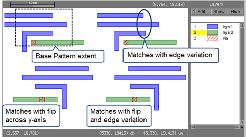

You can easily capture a pattern from a
layout using the Calibre Pattern Matching GUI. This procedure uses
the drawn rectangle mode to capture a pattern that is used in the
next two procedures in this chapter.
The examples in this chapter for layout editing use the following
layout. Only the layer1 shapes are of interest. The location in
the top left is the base pattern, which is captured in this procedure.
Figure 1. Example
Layout for Pattern Matching
The layout has three other pattern locations:
Lower left,
the base pattern flipped across the y-axis. By default all orientations
of a pattern are matched, so this pattern matches the base pattern.
Top right,
the base pattern with edge variation. This pattern matches only
if appropriate edge constraints are added to the base pattern.
Lower right,
the base pattern with edge variation and flip. This pattern matches
only if appropriate edge constraints are added to the base pattern.
The procedure “Adding Constraints to Pattern Edges and the Output Marker” describes
how to add constraints to the pattern.
Video
Capture Pattern from a Layout Open in Calibre DESIGNrev —
This video demonstrates the capture process for bounding box capture
mode. This mode captures pattern shapes within a rectangular region
that you draw in the layout viewer.
Procedure
- Open the
layout in one of the Calibre layout viewers, such as Calibre DESIGNrev.
Tip View the layout at the top
cell level. The capture process clips the pattern for all levels of
hierarchy at and below the currently selected cell level.
- In the
layout viewer, hide all layers except the layer of interest (layer1
in this example).
- In the layout viewer, choose to
open the Capture Patterns wizard.
Use the default library name of lib.pmdb for
the Output File path.
- Choose
“Bounding Box” as the Capture Mode and click Next.
- Define
the pattern region:
- Click
the Select Area button.
- In the
layout viewer, drag the cursor to draw a rectangle around the base
pattern extent, as shown in Figure 1.
The cell name and rectangle coordinates populate
the dialog box entries.
- Specify
the target layers:
- Click Get
Visible Layers.
This populates the layer table with information
from the open layout.
- Make
sure the Layout Layer column has the correct layer number for the
layer to capture. If not, double-click in the cell and choose the
correct layout layer.
All other options can remain at the default settings.
- Click Capture.
The transcript is displayed. You can view the generated
rule file in the transcript.
The Calibre Pattern Matching GUI opens the captured library.
- Click the
pattern name in the list of patterns in the lower left of the Calibre
Pattern Matching GUI.
The pattern should be similar to
that in the following image.
If the pattern is not correct, click Back twice
in the Capture Patterns wizard to redo the capture. Uncheck “Append
to an existing library” to overwrite the existing library, then adjust
options and recapture the pattern.